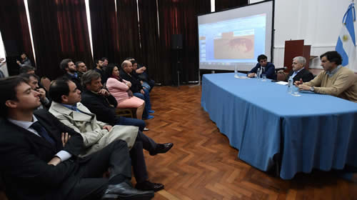
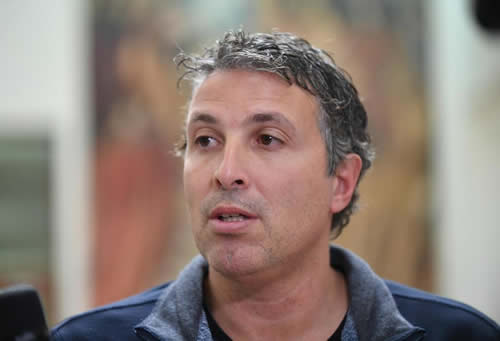

Real Chubut - Agencia de Noticias


Das Neves recibió al sector pesquero por el plan de manejo del langostino

Asistieron representantes de todas las cámaras, flotas y empresas.
Del encuentro, que el mandatario calificó como "inédito", participaron empresarios e integrantes de las cámaras del sector. Se busca consensuar una propuesta que será elevada por Chubut al Consejo Federal Pesquero con el fin de proteger el principal recurso con el que cuenta la provincia.
El gobernador del Chubut, Mario Das Neves, mantuvo una importante reunión con empresarios y representantes de las cámaras pesqueras en la que se analizó la elaboración del plan de manejo del langostino, con el propósito de consensuar una propuesta para conservar y proteger el recurso, que será elevada al Consejo Federal Pesquero.
El encuentro se efectuó en el Salón de los Constituyentes de Casa de Gobierno, y durante el mismo Das Neves estuvo acompañado por el secretario de Pesca, Alberto Gilardino, y el subsecretario del área, Adrián Awstin, además formaron parte representantes de la Cámara Argentina Patagónica de Industrias Pesqueras (CAPIP), la Cámara de Armadores de Pesqueros y Congeladores de la Argentina (CAPeCA), la Flota Amarilla de Rawson, Flota Artesanal y referentes de las empresas Conarpesa, Iberconsa y Pesquera Veraz.
FIJAR UNA POSICIÓN
Al iniciar la reunión Das Neves manifestó que "es inédito después de muchos años, recibir acá al sector pesquero, los representantes de la CAPIP, la CAPECA y otros organismos para hablar sobre la nueva `vedette´ en el mundo que va a ser el langostino, como en su momento paso con la merluza, por eso estamos tratando de juntarnos para fijar una posición unívoca entre todos los chubutenses".
En este sentido remarcó que "más allá que podamos ser una provincia periférica, a nosotros nos asiste el derecho como ninguno para realizar planteos dado que tenemos un frente marítimo impresionante".
Por eso "cada vez que analizamos cualquier presupuesto pensamos en obras de infraestructura portuaria, como lo vamos a hacer ahora en Madryn y Comodoro, igual que a la hora de decir el destino de los productos, que son mayoritariamente nuestros, que lo hagan otros en vez de nosotros no lo vamos a permitir bajo ningún modo".
REEMBOLSOS POR PUERTOS PATAGONICOS
Das Neves aprovechó la ocasión para expresar que "es importante no sólo que nos preparemos para unificar posiciones sino también para que no generemos comentarios desde acá, que terminan siendo mentira como paso con la quita de los reembolsos por puertos patagónicos".
Recordó que "apenas me enteré de esto hablé con el presidente, Mauricio Macri, y él mismo me lo desmintió, por eso les pido que no seamos nosotros los que matemos la gallina de los huevos de oro".
Indicó que es necesario "fijar objetivos, que coordinemos acciones, peleemos por nuestros recursos" y al dirigirse a los empresarios y trabajadores de la pesca les manifestó que "aprovechen a Alberto Gilardino (secretario de Pesca), que es un funcionario serio como no hemos tenido en los últimos años, que habla con todos los sectores, buscando lo mejor para todos, defendiendo a nuestra gente", enfatizó.
CUIDAR EL RECURSO
Por su parte, el secretario de Pesca, Alberto Gilardino, explicó que "el Consejo Federal Pesquero ha decidido crear una comisión de seguimiento del langostino, que no emite resoluciones, pero si tiene mucha importancia".
Manifestó que "el próximo viernes será el primer encuentro y por supuesto están todos invitados a participar".
"Sabemos que el langostino es el principal recurso que tenemos, y lo debemos cuidar. Ante esto la idea de este encuentro es consensuar el manejo de la pesquería tanto en aguas provinciales como nacionales, pero entendiéndolo como un conjunto, sabiendo que todos tienen que entender que ocupan un lugar, buscando no superponernos, para que todos puedan tener un buen manejo del recurso", detalló el funcionario.
Asimismo "tenemos la decisión de realizar este tipo de reuniones más seguido, siempre con un representante por sector, para tener una discusión fluida, porque la comisión de langostino no se hace sólo este viernes, sino por lo menos una vez al mes, por ello debemos tener siempre una política común entre todos".
AGRADECIMIENTO
El presidente de la CAPIP, Damián Santos, valoró que "es la primera vez que este Gobierno convoca a esta reunión y agrademos el esfuerzo que hace el gobernador Das Neves para estar acá, para presidir hoy y darle la introducción a esto".
"Creemos que es muy importante porque es un recurso que básicamente nace y se cuida acá en Chubut. Esto no es contra nadie, ni contra otra cámara, ni Buenos Aires, ni Santa Cruz. Esto es a favor del recurso, entonces creemos que no es complicado consensuar pensando de acá a 20 años", afirmó.
Santos destacó que "todos coincidimos en que no puede haber nuevos permisos, ni provinciales ni nacionales, creo que hay que estudiar un poco realmente a dónde va cada langostino que se pesca" y obviamente "cuidar las fuentes de trabajo que genera la actividad".
Y esto se "consigue sólo si vamos todos por el mismo camino", concluyó.

PUBLICIDAD